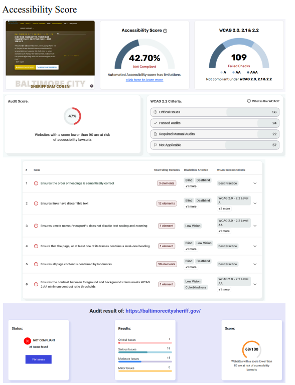
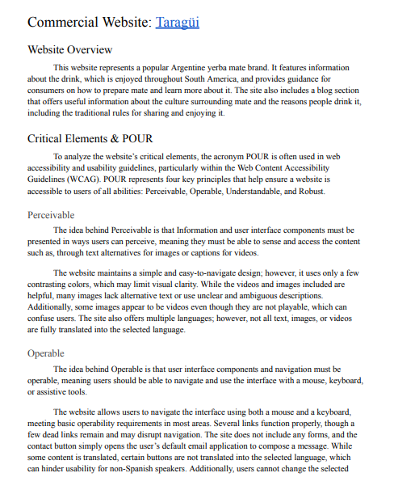
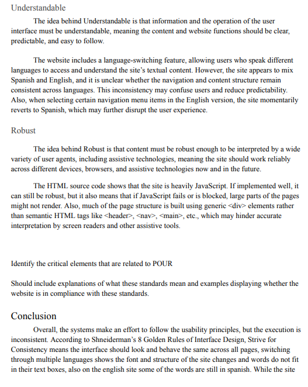
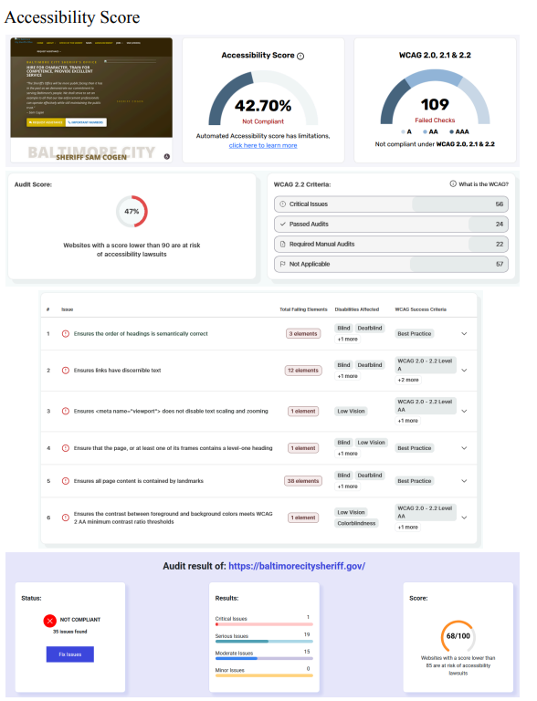
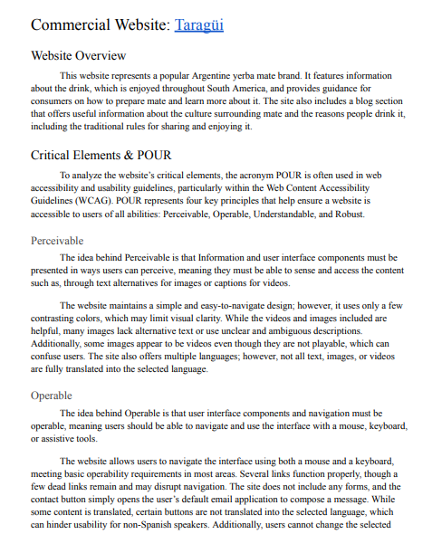
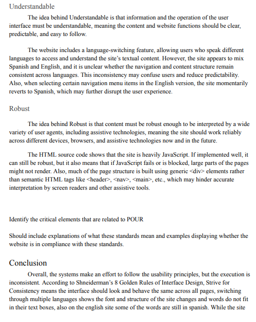

Accessibility Report
OVERVIEW
This report summarizes the findings from an analysis of two websites, a government site and a non-English site, to evaluate their implementations of web accessibility guidelines. The goal is to assess and classify their compliance with key principles outlined by WCAG, W3C, UAAG, and ATAG. The websites analyzed are the Baltimore City Sheriff’s Office and Taragüi. The analysis concludes that both websites fail to incorporate substantial accessibility features to ensure they are usable by people of different backgrounds and abilities. This report provides an in-depth discussion of the findings.
CONTENT
 





KEY ACHIEVEMENTS
- WCAG 2.1 Evaluation — Conducted a detailed accessibility audit of the Baltimore City Sheriff’s Office website, identifying multiple WCAG 2.1 violations related to non-text content, semantic structure, color contrast, text scalability, and navigational landmarks.
- Identification & Impact Analysis — Identified critical accessibility barriers including missing alternative text for images, improper heading hierarchy, insufficient color contrast, restricted text resizing, and the absence of semantic landmarks, all of which negatively affect screen reader users, keyboard navigation, and users with visual impairments.
- POUR Based Accessibility Analysis (Commercial Site) — Applied the POUR principles to evaluate the Taragüi non-English commercial website, analyzing how effectively the site supports perceivability, operability, understandability, and robustness for a diverse, global user base.
- Documentation — Compiled findings into a structured technical report with prioritized, standards-based recommendations aligned with WCAG 2.1, focusing on improving accessibility compliance, navigation efficiency, and inclusive user experience across both websites.
- Impact — Delivered a comprehensive accessibility assessment demonstrating how real-world websites fall short of accessibility standards, highlighting practical improvements needed to support users with disabilities and promote inclusive digital design.